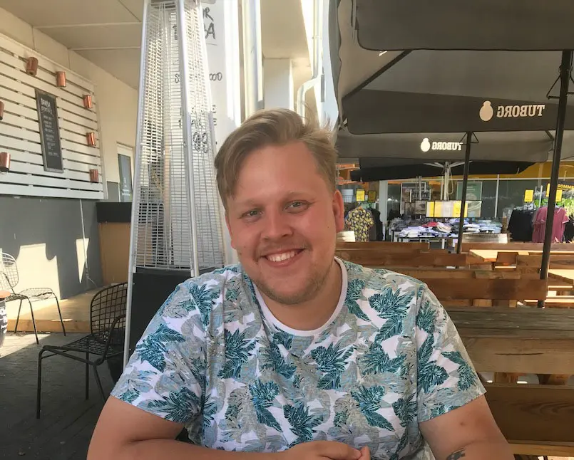

Mit navn er Steffen Krøyer, og jeg er student på KEA som Multimedie designer
Da jeg var lille fik jeg en GameBoy i fødselsdagsgave, og det startede min kærlighed for spil. Især den måde de kan sætte dig ind i en anden verden, som intet andet media kan gøre, og lade dig være en del af historien. Med tiden begyndte jeg så at være interesseret i hvordan disse spil blev lavet, og det var med til at gøre at jeg ville arbejde inden for tech. og forhåbentligt inden for spil-udvikling en dag.